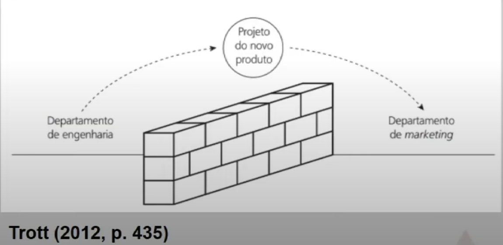
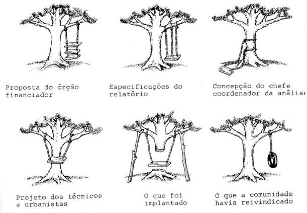

Disciplinas
GESTÃO DE INOVAÇÃO E DESENVOLVIMENTO DE PRODUTOS Concluído
Materiais
Vídeo 1 - Gestão da Inovação e Desenvolvimento de Produtos - Gestão do desenvolvimento de novos produtos (UNIVESP) sendTemas da aula
- Dimensões/decisões de um novo produto
- Etapas para o desenvolvimento de novos produtos
- Modelos de desenvolvimento de produtos
Dimensões/decisões de um novo produto
O que é um novo produto?Um “novo produto” pode ser definido como um produto que não existe atualmente ou nunca esteve disponível para venda e é uma adição ao portfólio do proprietário da marca ou então é uma novidade para o mercado.
Que decisões tomamos ao desenvolver um novo produto?A tomada de decisão é feita de forma individual ou coletiva e é influenciada por uma variedade de fatores, como valores pessoais, pressões sociais e informações disponíveis. Algumas decisões são tomadas usando abordagens mais racionais e analíticas, enquanto outras podem ser mais intuitivas ou emocionais.
Etapas para o desenvolvimento de novos produtos
Modelo linear de DNP
Fuzzy front end (Difusa linha de frente)
Geração da ideia
↓ ↓
Varredura da ideia
↓ ↓
Teste do conceito
↓ ↓
Análise do negócio
↓ ↓
Desenvolvimento do produto
↓ ↓
Teste de marketing
↓ ↓
Comercialização
↓ ↓
Monitoramento/ avaliação
Modelos de desenvolvimento de produtos
A multidimensionalidade de um produto- Especificações de qualidade
- Nome da marca
- Embalagem
- Preço
- Nivel de serviço
- Características
- Tecnologia


- Participação dos clientes, fornecedores etc. (custo de mudança tardia é alto)
- Avaliação contínua do desenvolvimento / necessidade de revisão das etapas
- Paralelismo de atividades
- Times de desenvolvimento
- Estrutura baseada em projetos
- Engenharia simultânea
- Stage-gates
- Rede
Concluindo
- Os modelos de DNP refletem a forma como a organização aborda o processo de inovação
- O DNP é um processo de negócio estratégico
- Time-to-market é importante
- Integração entre as áreas da empresa
- Vínculos externos
- Avaliação constante